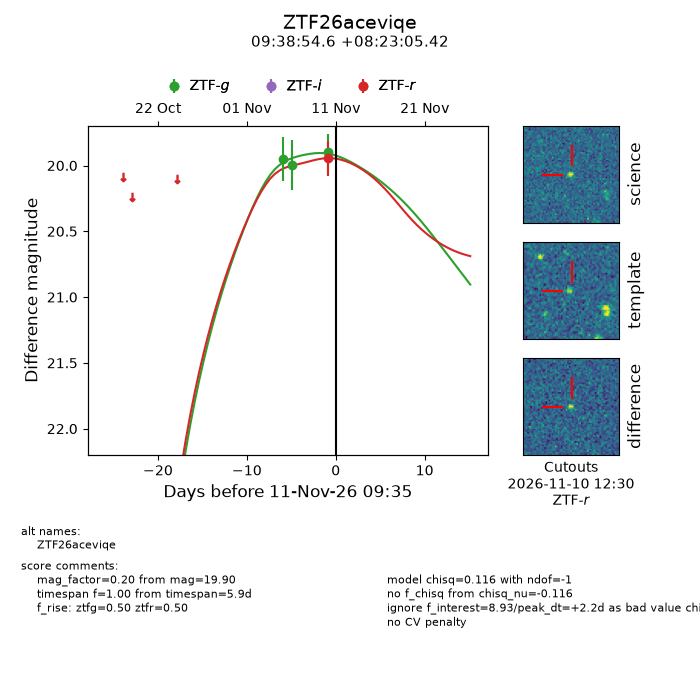
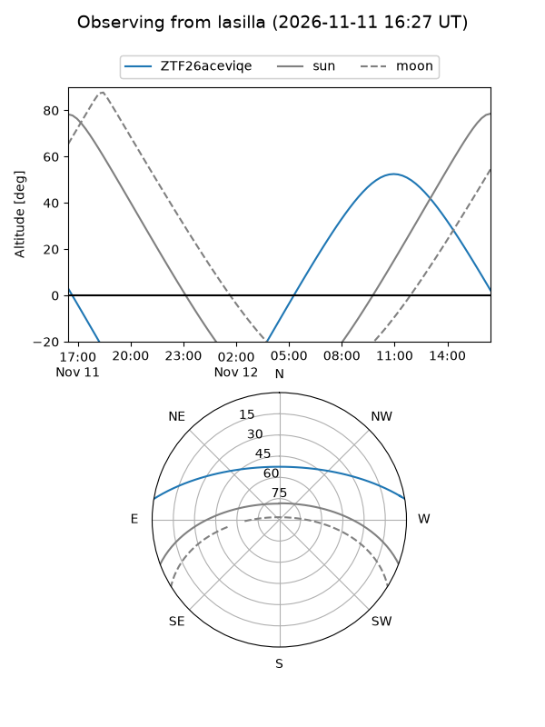
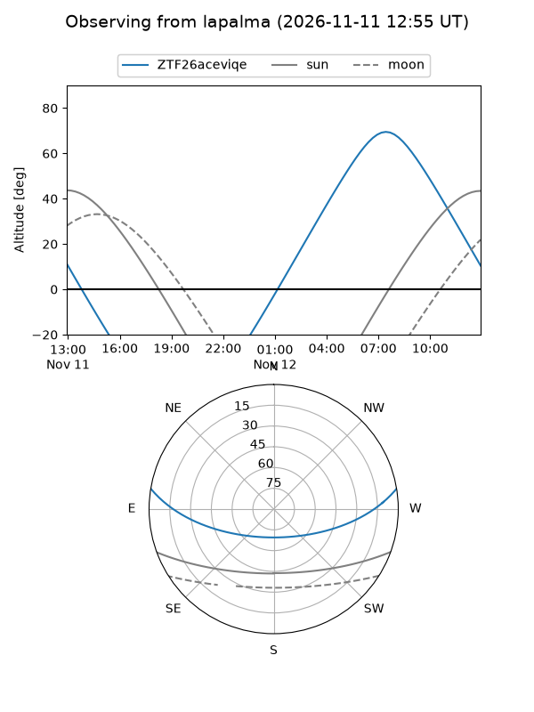
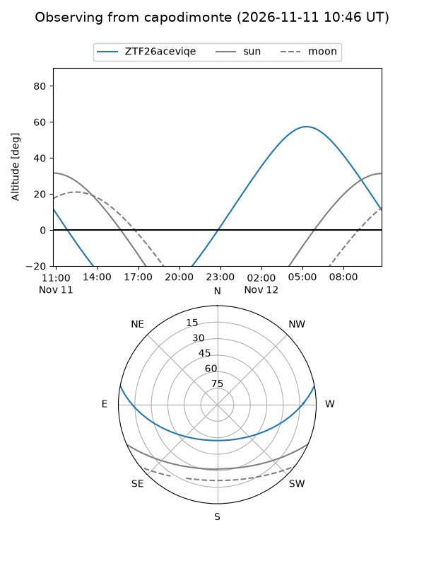
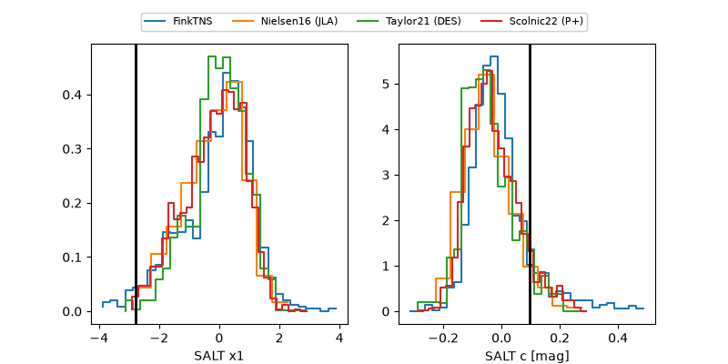

ZTF26aceviqe
Target ZTF26aceviqe at 2026-11-11 21:32
Aliases and brokers:
FINK-ZTF: ztf.fink-portal.org/ZTF26aceviqe
Lasair-ZTF: lasair-ztf.lsst.ac.uk/objects/ZTF26aceviqe
ALeRCE-ZTF: alerce.online/object/ZTF26aceviqe
Direct TNS query: direct search
alt names
ZTF26aceviqe (ztf,fink_ztf)
Coordinates:
equatorial (ra, dec) = 144.7276,+8.38484
equatorial (HMS+DMS) = 09:38:54.64,+08:23:05.42
galactic (l, b) = (226.0215,+40.85430)
Flags:
peak dt: +2.7
Photometry:
last ztfg=19.90, ztfr=19.94
3 ztfg, 1 ztfr detections
Lightcurve

Visibility



Additional plots
